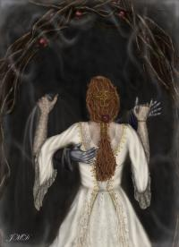

The Diary of Horace the WarriorDay 4Inventory: 3 sticks, 1 key, 1 unknown weapon Awoke in a pigsty with a piglet snuffling around my face. Must try and find somewhere more pleasant to sleep. Last memory was of drinking malmsey found in an Inn somewhere and stumbling up someone's driveway. Killed the piglet (messily) with an axe like weapon I was sleeping on. Hoped to eat resulting meat but was put of by a) horrible, disgusting mess of piglet I had made, and b) no where to cook the damn thing! I found my way out of the pigsty and then bumped into this ugly looking fella. He wasn't very talkative and had a terribly hunched back. He lurched off after I asked him for the directions back to the Inn. I peered into the building that he appeared from. It was a dark looking library as far as I could tell, but it looked a bit spooky and I didn't fancy getting even more lost. I wandered around a bit and found myself in an olive grove. No edible olives though which was a shame because I was absolutely starving! As I sat down to contemplate my lostness and my starviness a guy came rushing past looking wildly around him. He asked me if I had seen the hunchback. I told him that I had seen a hunchback near the pigsty. Wonder what's so special about that hunchbacked fella. Luckily this guy took me back to the Inn, and even luckier there was some food outside (ok, a carrot but its better than nothing!). I settled in the bar and drunk malmsey and beer until I passed out.
Day 7Inventory: 2 sticks, 2 keys, 1 cardboard box and 1 halberd (I've learnt what the axe-like weapon is called!) I ended up staying in that Inn for a few days. It's quite nice and homely in there (ok, read as safe). I also round a rather useful cardboard box that I can keep my sticks and keys in. Actually, apparently these stick things I'm carrying around are actually called brands. I still don't know what they do or even why I'm carrying them around but I've seen loads of other people carrying them so they must be useful! Thought I'd try and find out what's so special about that hunchbacked geezer. I managed to find my way back to the pigsty but no hunchback. I found the building he came out of but it was locked and the two keys I was carrying wouldn't open the door. As I was trying not to spill the contents of my box at the door suddenly this rather impressive warlock appeared, and I mean APPEARED at my side! One moment I was by myself, the next moment I had company! This warlock produced a key, waved it at me, winked then opened the door. Just as I was about to say thanks the hunchback bore down on us! Even quicker the warlock laid into him with his sword! It was a horrible and bloody sight. The warlock hacked and slayed at him with his sword whilst waving his arms around and making the air around him tingle with all kinds of magical colours! I know it all sounds highly improbable seeing as the warlock only had 2 arms but it did really happen! In no time at all the hunchback was dead and the warlock grabbed the items the hunchback had dropped (a cowl looking thing and a rather odd looking bowl that had a biscuit in it). He then turned to me and I ran faster than I've ever ran in my life before! I kept on running until I could run no further. The reason for this was because I reached a dead end. I found myself in a wood that became so thick with thorn bushes I had to stop. Exhausted I collapsed to the ground. That incident with the warlock and hunchback had seriously shaken me up, and the running had shook up my stomach so I vomited up my breakfast. As I was replaying the ugly, bloody scene in my mind a stag trotted up beside me and nosed my face. Innocently I petted the stag when it suddenly butted me! Now I was on the receiving end of a bloodied attack! If you ever think about approaching a stag - don't! Those hooves and antlers really, really hurt! I was giving it all I could with my axe but the stag was just too strong for me! As I was being beaten into a bloody pulp I realised that it wasn't just me and the stag. There was another person here also fighting the stag. Another person I couldn't see! I didn't know whether to be relieved or even more scared! Eventually me and the unknown person killed the stag and the warlock I had run away from before appeared before my eyes! Before I could turn heel and run away (again) he laid a hand on my shoulder and stopped me. Which is just as well really because I was absolutely knackered and would have probably just embarrassed myself by running two steps and falling over. He claimed that he was a friend and if ever I'm in trouble again I should just call for him. I guess it'll be useful to have such a powerful friend but he does scare me a bit. His name is Dunlot (which is an odd name if you ask me!)
Day 11Inventory: 5 brands, 1 key, 1 box, 1 halberd, 1 drinking glass, 1 flower After the excitement of the day with the stag, hunchback and warlock I stayed low for a few days. I drunk myself silly in the Inn for the first 2 days, then I got up enough courage to wander to the nearby cottage. Bumped into this girl I've seen around a few times. She's also new to this sword and sorcery lark like me. She seems pretty nice; maybe next time I'll ask her if she would like to share a malmsey or few with me in the local. She made me wonder about those brand things again though:
Her: Hi. I then proceeded to juggle three of them only I can't juggle and I managed to scratch my face with one of them and snap another one into many bits. So much for showing off ...
Her: What do you do with them then, apart from juggling? I gave her the flower I had found and bid her on her way. After she had disappeared round the corner I discreetly hid my brands under a bush.
Day 13Inventory: 0 brands (!), 2 keys, 1 box, 1 bottle of rum (I found it lying about, that's my excuse!) and 1 halberd. I bumped into that girl I was telling you about again. This time I did pluck up the courage to ask her out for a drink with me. Guess what her reply was .... She didn't think that Dunlot would like it!!! Just my luck! Well I'm certainly not going to do anything to piss off Mr I'm-a-big-and-powerful-warlock Dunlot so I left it at that and bid her on her way (again - sigh). I wandered around aimlessly for a bit, picked up 3 brands and carefully placed them in my box. I found a beach to throw pebbles into the sea from and slowly drank my way through the bottle of rum I had found. Obviously girls don't go for little warriors like me. I guess if I were a girl I would prefer to have a drink with a mighty warlock rather than a piddly little warrior that can't even defend himself against a stag! I drank myself slowly into a stupor on that beach.

... click here to return to the front page.
| ||||||